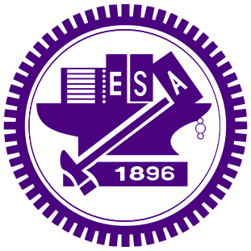
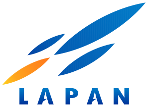

Short bio
My name is Ardian Umam (禹安銳). You can call me Ardian, or 安銳 (An-Rui) in Chinese. I am currently pursuing my Ph.D. in the Department of Electrical Engineering and Computer Science at National Yang Ming Chiao Tung University, Taiwan, advised by Prof. Yen-Yu Lin from VLLab and Prof. Jen-Hui Chuang from Islab.
My reseach interest areas are (but not limited to) deep learning and computer vision. In recent years, I have been working in various topics, including 3D point cloud augmentation, 3D part segmentation, unsupervised/weakly supervised segmentation, multi-modal (vision-language) recognition, optical character recognition, camera callibration and audio quality estimation. I was an intern in Google under ChromeOS Audio Team and in ITRI working on model compression.
Selected publications
-
 PartDistill: 3D Shape Part Segmentation by Vision-Language Model DistillationIn IEEE/CVF International Conference on Computer Vision (CVPR) , 2024
PartDistill: 3D Shape Part Segmentation by Vision-Language Model DistillationIn IEEE/CVF International Conference on Computer Vision (CVPR) , 2024


Education
- National Yang Ming Chiao Tung UniversityPhD in Computer Science, 2020 - Now
- National Chiao Tung UniversityMSc in Computer Science
- Gadjah Mada UniversityBSc in Electrical EngineeringMy bachelor degree is in control and system engineering
Work experience
- LecturerInstitut Teknologi Bandung, 2019 - NowFaculty member in School of Electrical Engineering and Informatics
- Graduate InternGoogle, Apr - Dec 2022Working on non-reference audio quality estimation which exploits both labeled data and unlabelled data via self-supervised approach
- Graduate Research AssistantComputer Vision Research Center - NCTU, 2018 - 2019Working on AI Smart Drone project, specifically in charge of optimizing depth map and detector models deployed in Jetson TX2
- Summer Research InternITRI (Industrial Technology Research Institute), Jul - Aug 2018Working on deep learning model compression, such as sparse regularization and pruning
- Avionic EngineerLAPAN (National Institute of Aeronautics and Space), 2015 - 2016Working on Maritime Surveillance System using UAV (Unmanned Aerial Vehicle)
Award
- Doctoral Scholarship Award
- Best M.S. Student Award
- TOP1 Final Project Competition
- TOP1 in-class Kaggle Competition
- Siswa Teladan Putra 1 - Klaten
Community service
- Conference reviewer
- Journal reviewer